What does the ideal art museum experience look like?
The answer to that question might be different for everyone, but through research,
some common pain points were revealed. Viewers don’t feel like they’re getting the full
experience when attending art museums. They would love to know more
about specific artists or pieces of art outside of museum tours, but are overwhelmed with
information when searching for it on their own, or can’t find exactly what they’re looking for.
How can we create the best experience possible for art museum attendees?
This is the first part of a two part project – the second part will focus on the virtual experience of the museum.
My Approach
Through a modified Google Ventures Design Sprint, I set out to create a product that will help attendees make the most of their museum visit through the use of technology. This is focused on the McNay Art Museum in San Antonio, Texas.
Users should come away feeling like they’ve missed out on nothing and have made the most out of their visit. All of their desired information about art and artists should be easily accessible, just at their fingertips, telling a story as they are guided from exhibit to exhibit.
My Role
User Researcher – UX
Designer – UI Designer
Tools
Sketch, Figma
Day One: Understand/Map
I spent the first day understanding the problem by synthesizing existing research, including interviews with museum goers and a cumulative persona -- Angela. Angela is twenty-three years old and a junior art director. She loves going to museums – usually alone – just to browse and take in the art. She wants to learn more so that she can have a more complete experience, but hasn’t been able to find the information she desires.
Angela wants easy access to fast information that will complete her art viewing experience.
Like Angela, users want the full experience when viewing art by knowing about it in context through bite size information. They don’t necessarily want to find out about art through a tour though – they want freedom. They’re looking to find out the “why” behind the art and reflect on it. They want to know about things such as how it was created and what methods were used.
“I often wonder – what would the artist tell me about this piece if they had a minute to talk to me? How cool would that be?!?” – Liza
The research also included input from museum tour guides, such as an interview with Lena Carroll, who works at the Metropolitan Museum of Art in New York.
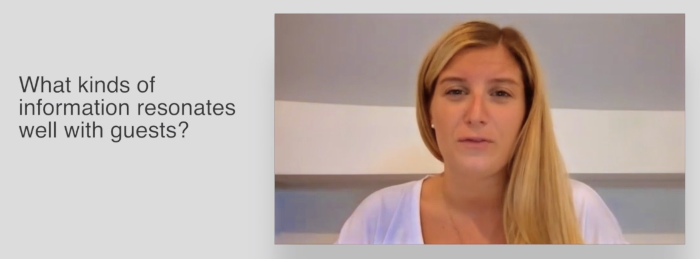
Lena talked about the importance of story when navigating art museums. Visitors want to know where artists came from and their background, such as what made them become an artist. They want to know about the times they lived in as well, so that they can understand the art better and form their own opinions. She said that the goal is for visitors to reflect on the art in their own way, because, “Art work is really meant to also sort of understand yourself in an interesting way”.
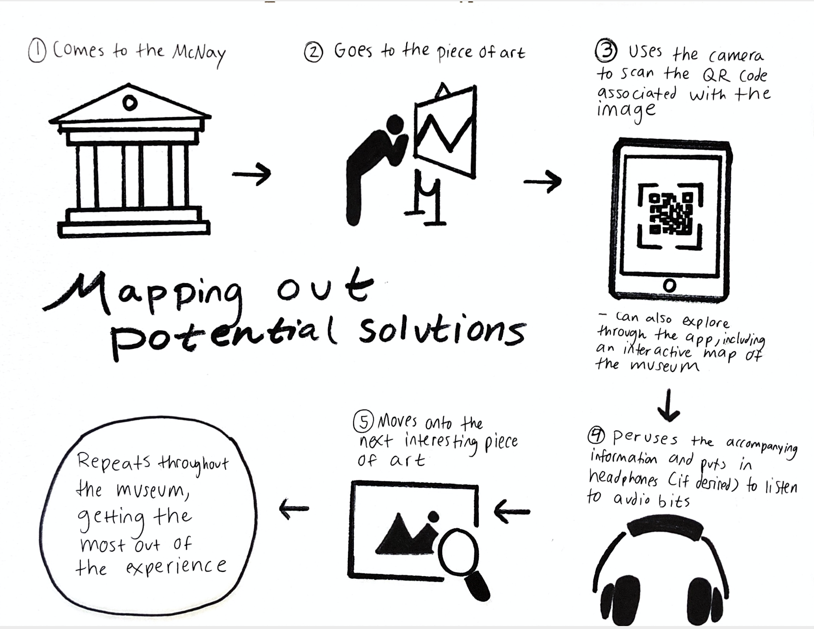
I took that information and mapped out potential end solutions, taking into account the specifics of the sprint. The final project is mobile-based as it’s geared towards those attending the museum in person. The ultimate goal is to “increase customer satisfaction and improve the experience when viewing art”.
Day Two: Sketch
On the second day, I focused on diving deeper into solutions through sketching and analyzing the competition for inspiration. I did some research about QR codes as well, and found that they might not be the right direction to go in. Image recognition technology -- where the user can directly scan the piece of art – might be a better approach. The museum wouldn’t have to manage the QR codes or affect the visual presentation of their museum with them. Also, studies have shown that using QR codes can be a confusing experience for some.
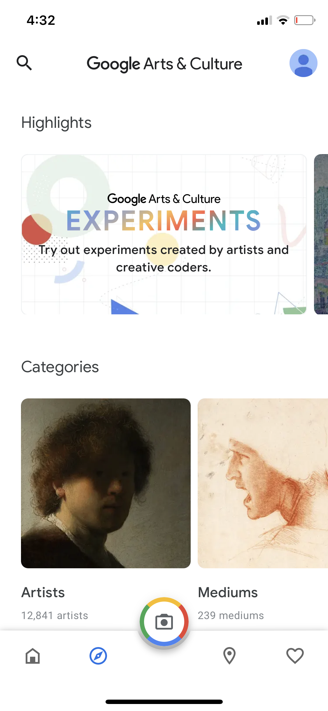
For competition inspiration, I looked at Arts & Culture by Google, Smartify, and the Metropolitan Museum of Art’s official application. Arts & Culture by Google has an extensive library of artistic information, including virtual exhibits from various art galleries and museums. Smartify is like Sound Hound – where the app listens to a song and tells users what it is – but for art. It’s partnered with some specific art museums around the world and provides information about their exhibits and tours. Fun fact: the featured art above is one of my originals. Since this project will focus on the McNay, the the Metropolitan Museum of Art is a great example of an application made for a specific museum.
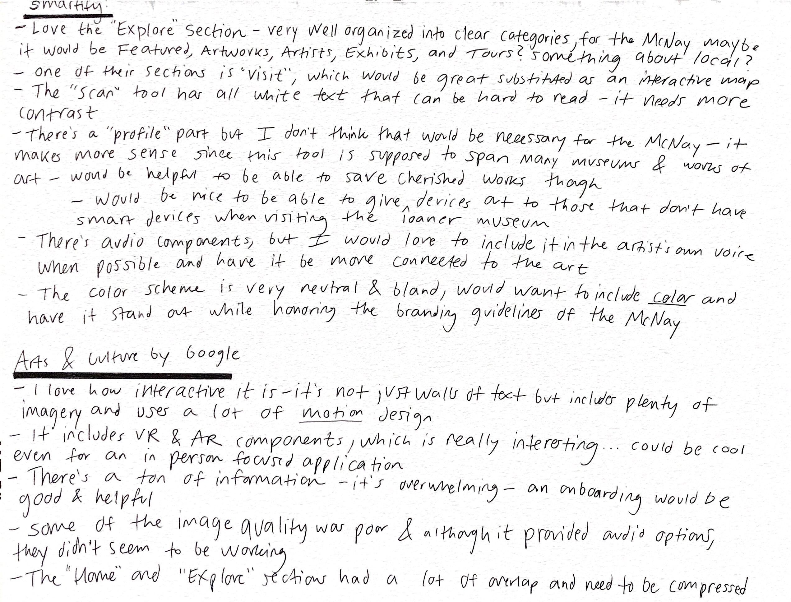
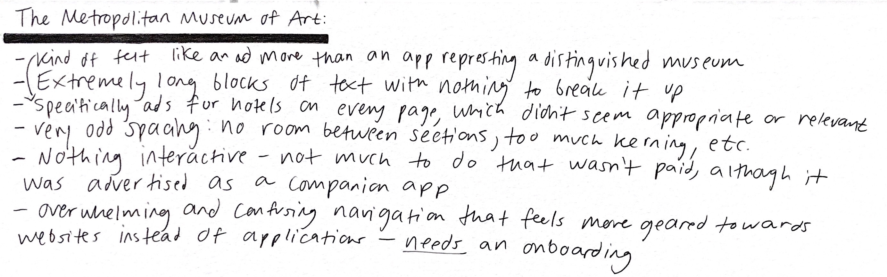
Some overall highlights include making the app engaging, interactive, and exciting like parts of Arts & Culture by Google – no big walls of text. Due to the large amount of information, it’s easy for these applications to become overwhelming, which is exactly the problem we’re trying to solve and what we need to stay away from. There should be audio, imagery, and color! After all, the information is supposed to be easily accessible. The navigation needs to be very intuitive and be appropriate for the McNay, such as including the different exhibits and maybe a focus on local artists, inspired by Smartify. For audio, it would be fantastic to get the artists’ perspectives, tying it back to storytelling.
For sketching, I started out by rapidly drawing out some ideas of the most important functions of the app using an exercise where each drawing is allocated one minute. I put myself in the user’s shoes as I went through the home page, getting to the scan feature, and inputting the artwork to get more information about it. What was the best, most intuitive way to do and show this? I decided to include a profile feature after all so that users could manage their settings, favorite pieces, and have a history of the artwork, artists, and exhibits they had viewed. The McNay can use a generic log in for loaner devices to be issued to attendees without smart devices.
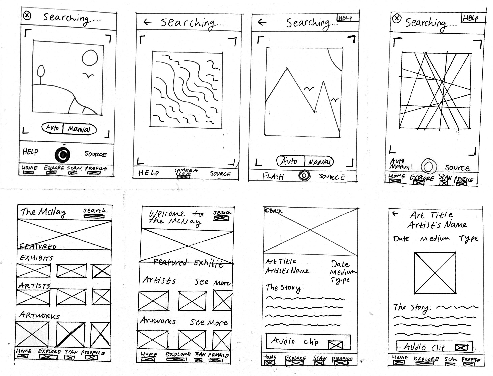
After sketching, I dived deeper into my ideas and returned to the research for further contemplation. It was difficult to show through simple sketches, but I wanted to break up the story section about the art with quotes, motion, and other elements, to make it interactive, interesting, and bite size. I wanted to ask the viewers questions to make it reflective as well. Since there was already an audio feature, I thought it would be great if all text had the option to be in audio form, since users may not want to look down to read when walking around the museum, and for accessibility.
I thought about the navigation of the home page and how to break it up into categories for ease of use. On further inspection, I thought that honoring the McNay’s organization would be the most user friendly, as those already familiar with the museum would be familiar with it, and for those not familiar with the museum, it would be more cohesive. The McNay organizes their art into current exhibits, future exhibits, and the collection – their permanent offerings – which includes European Art, American Art, Modern and Contemporary Art, and Theatre Arts. Including future exhibits would be a great way to advertise through the app.
I then created a storyboard of a user coming into the app, scanning a piece of art, and getting the resulting information to show the main ideas I had decided on through my initial brainstorming and sketching.
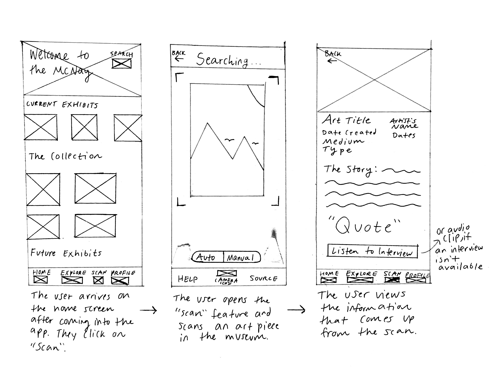
Day Three: Decide
Day three was all about further decision making and fleshing out more of the app through sketches that served as a light version of wireframes. I walked through a more detailed process of the user experience from beginning to end, and prepped the project for high fidelity prototyping.
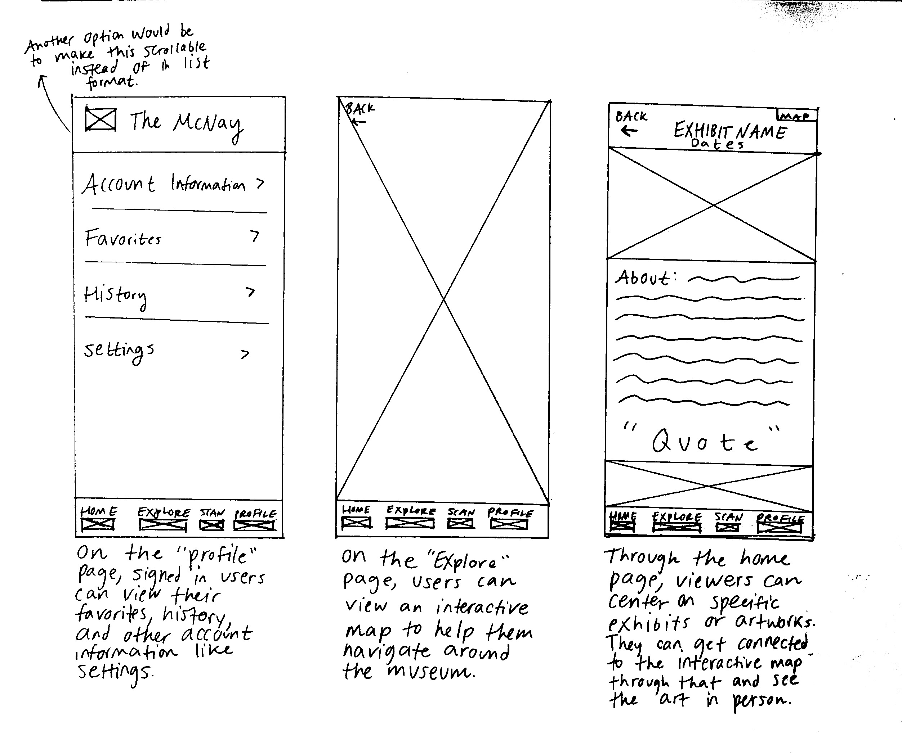
After signing up or logging in, the user will start by going through onboarding screens to learn how to use the app without issue. They will start at the home screen, where they can view all of the major categories the museum possesses like current exhibits, and go through them for inspiration or for direction as they go around the museum. Each page will have a link to the interactive map or the “Explore” page that will point to the location of that exhibit or artwork.
When wanting to know more about a specific artwork, the viewer can go to “Scan” to use image recognition technology on the piece, which will pull up information about it automatically. This is the main feature of the application, which will assist users in having the full experience of the museum. As they go along through the application, users can favorite art, go back to their history of scanning, and adjust their settings through their “Profile”.
Day Four: Prototype
Day four was dedicated to jumping straight into high fidelity prototyping. I quickly prototyped the app, concentrating on the main screens for the core functions.
Along the way I made edits, such as changing “Explore” to “Map” for further clarity. I realized that some of the scan features I had included in my sketches didn’t make sense for the design, such as having a button at all – the scan would be automatic once the piece of art was in the frame unless the user wanted to scan an already taken photo.
Through the UI design, I aimed to express the look and feel of the McNay.
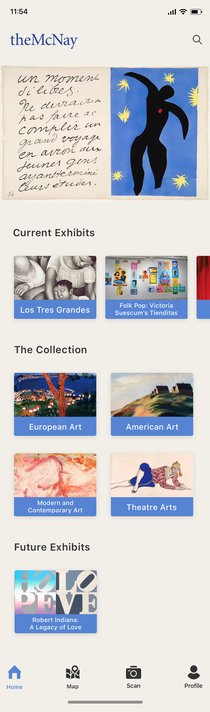
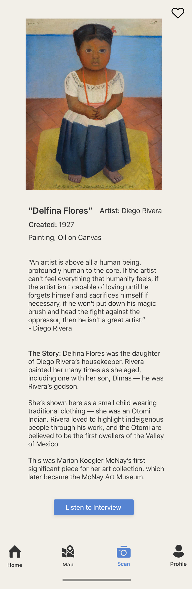
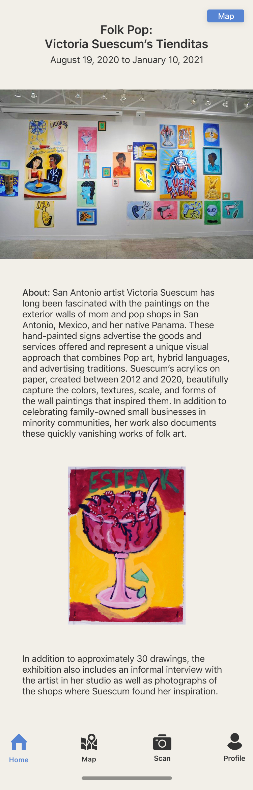
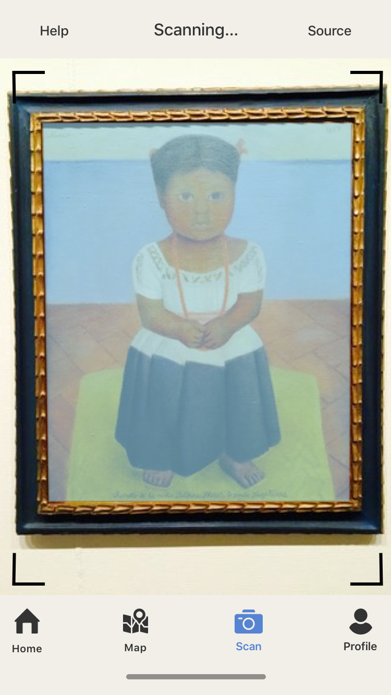
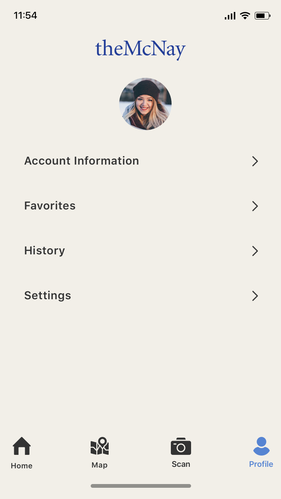
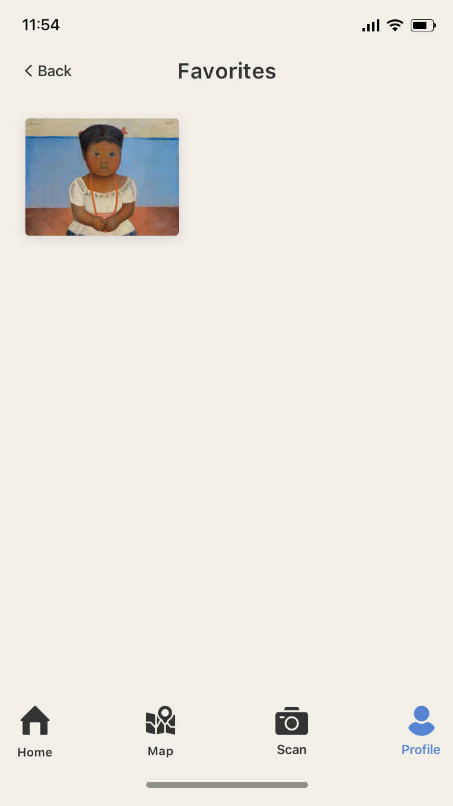
Day Five: Test
On day five I tested my prototype with five people I had recruited earlier on in the week. I concentrated on art lovers and those that regularly attend art museums and galleries to get accurate data. 5/5 of the participants successfully completed the main task and it was described as “seamless” and “streamlined”, however there were other concerns that came up.
The text on the current exhibits example page was described as “intimidating” and was recommended to be broken up by 4/5 participants. I broke up that text into three small paragraphs that are more digestible instead of one large chunk of text. The map button on that page was also something that came up – participants thought that it wasn’t obvious enough and could be missed since it was in the corner of the page. I changed it into a floating action button that will scroll with the user as they move around the screen.
On the results page after scanning art, the feedback was that the amount of text there was overwhelming too. I added more hierarchy, space, and differentiation between the sections such as with a line separating them. I also removed the quote for simplicity. On that page, participants were concerned that the audio button was on the bottom of the screen and easily missed if a user didn’t scroll. I moved it to the top of the page and added a play button.
The final edit was changing the word “source” to “library”. Participants thought the word “source” was confusing and didn’t properly explain what the feature did, which is allowing users to scan already taken photos from their camera roll.
Overall, users said that the app mirrored the museum experience well and is “familiar in a good way” – they liked the blue and the minimalness, and felt that the app looks clean, inviting, and intriguing. As one user said, “It looks exactly like something I would look at in a museum and ponder over”.
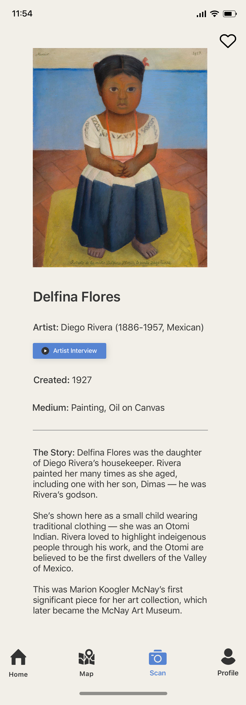
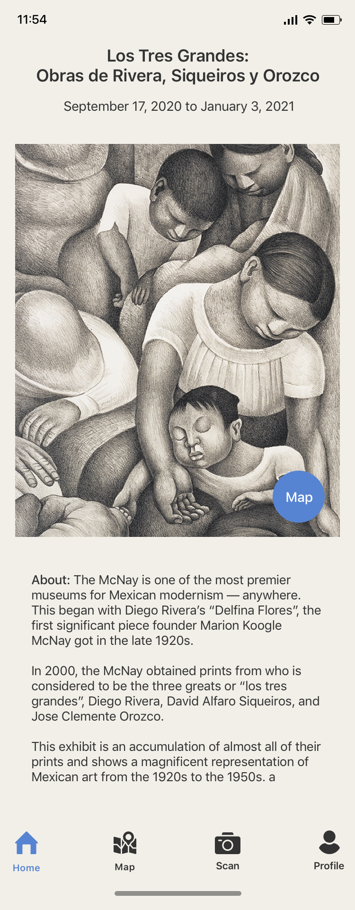
Reflections & Next Steps
It was very interesting doing this design sprint under such intense constraints and showing myself how much I could accomplish in the matter of only five days. It also got me to focus more on sketching and to incorporate different sketching techniques into my design process. Art is one of my passions, and it was amazing getting to work on a project that’s centered around improving the museum going process.
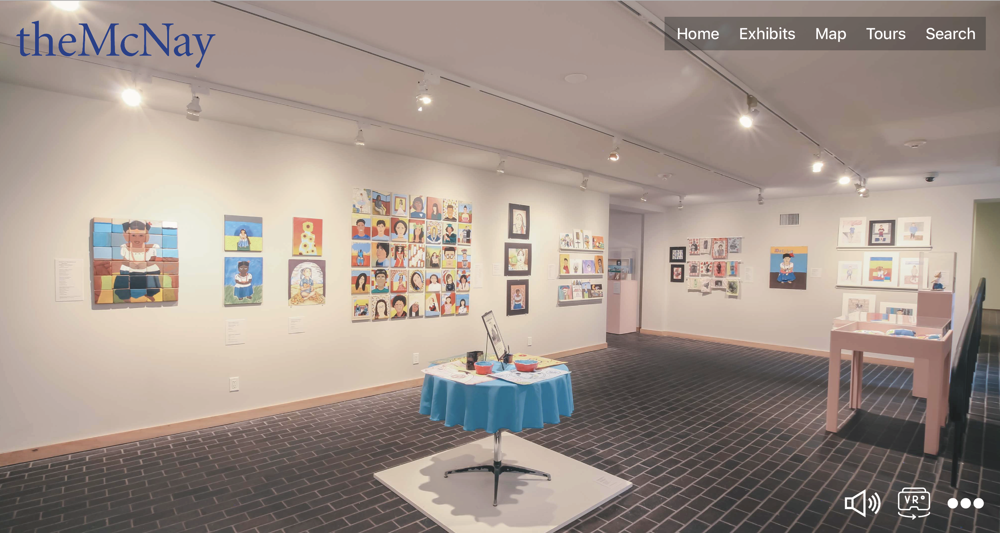
This was the first part of a two part project. The first part focused on the in person experience, and the second part is focused on the virtual experience. Since COVID-19, museums like the McNay have seen low attendance, which has resulted in financial and other suffering. The solution is a virtual tour application that will have 360 photos and videos of the entire grounds, free self-guided tours and paid, live tours as well as interactive activities for teachers, kids, and other visitors. Not only will this allow locals to enjoy the McNay in a safe way during the pandemic, but it will also enable the McNay to bring their museum to those outside of San Antonio and Texas, furthering their mission to engage “a diverse community in the discovery and enjoyment of the visual arts”. Like with the in person application, users will be able to interact with works of art to get further information.